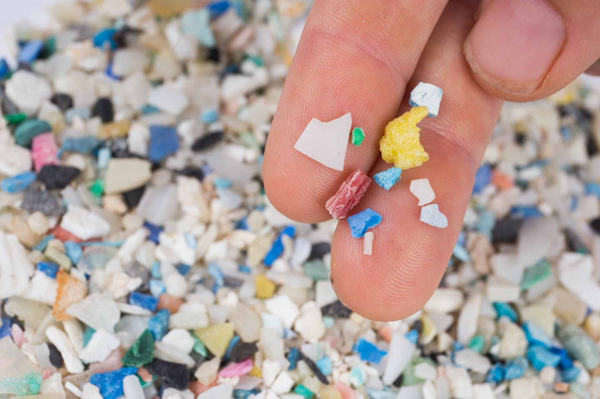
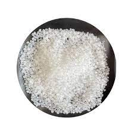
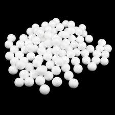
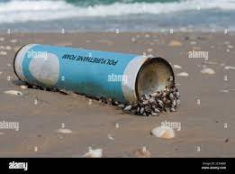

Les tortues marines ont joué un rôle vital dans le maintien de la santé des océans du monde pendant plus de 100 millions d'années. Ces rôles vont du maintien des écosystèmes productifs des récifs coralliens au transport des nutriments essentiels des océans vers les plages et les dunes côtières.

Microplastiques - Il faut 100 à 1000 ans pour se décomposer et on les trouve dans les cosmétiques, les gommages corporels et les dentifrices.

Polypropylène - Il faut 20 à 30 ans pour se décomposer et peut être trouvé dans les bouchons de bouteilles, les pailles, les pots de yaourt et les pare-chocs de voiture.

Polystyrène - Il faut 500 à 1 million d'années pour se décomposer et on le trouve dans les garnitures, les emballages alimentaires, les couverts jetables et les assiettes ou cassettes.

Polyuréthane - Il faut 100 à 400 ans pour se décomposer et peut être trouvé dans les éponges, les isolants thermiques, la peinture et le vernis.